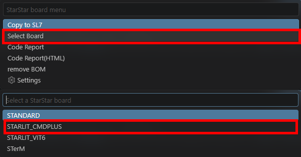
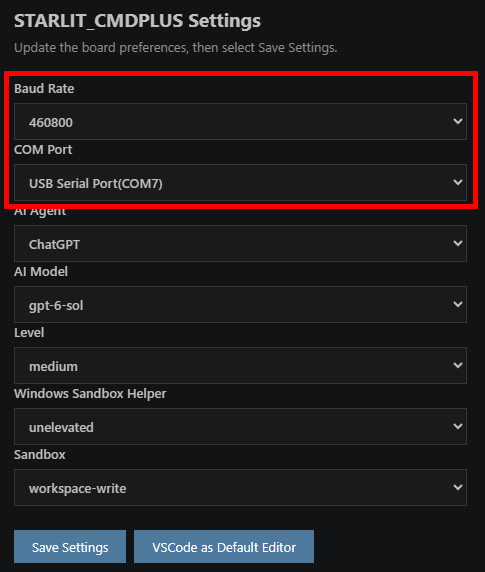
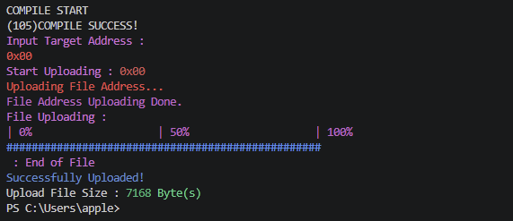
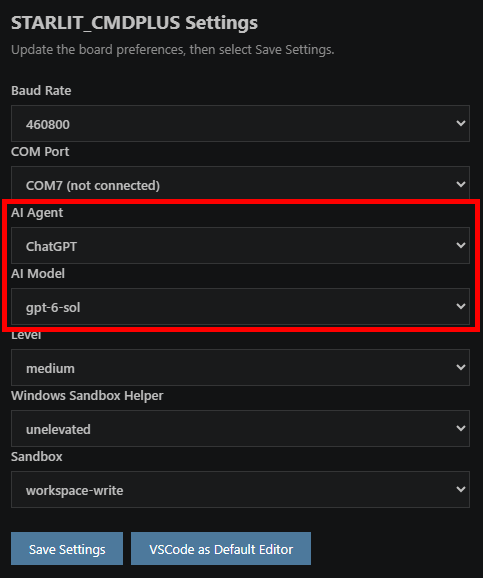
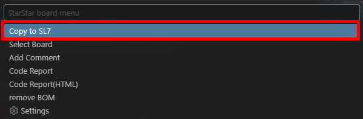
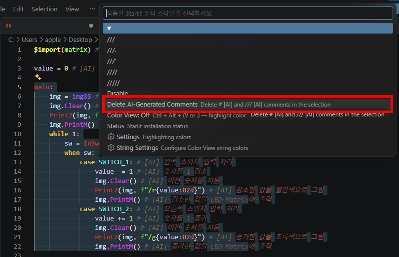
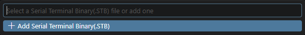
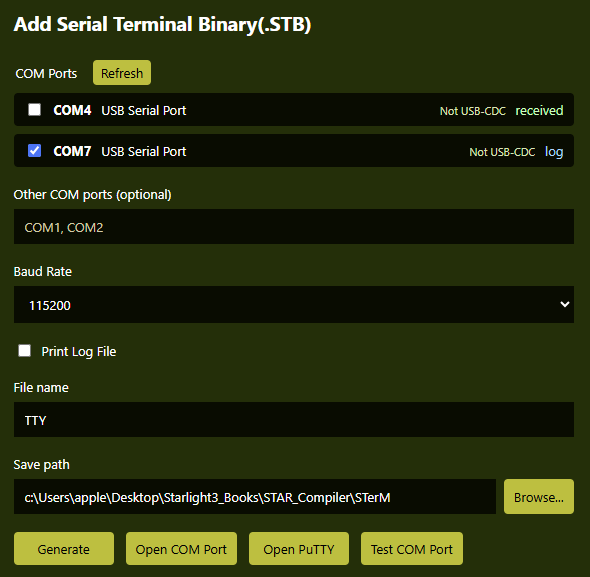
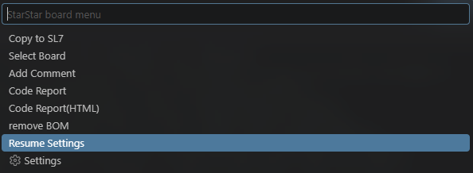

VSCODE EXTENSIONS
VSCode용 Starlit 확장 사용 가이드
Starlitliter로 편집하고, StarStarXtension으로 실행하고, Tutatuta로 통신 결과를 확인하세요.
제공된 Programs 폴더 기준: StarStarXtension 0.0.43 · Starlitliter 0.0.56 · Tutatuta 0.0.19
기존 안내서의 화면을 인용하고 현재 확장 소스로 사용법을 갱신했습니다. 화면 속 모델·포트·색상은 설치 환경에 따라 다를 수 있습니다.
GUIDE 01
설치·첫 설정
세 확장을 설치하고 Starlit 실행 파일 연결하기
| 확장 / 기준 버전 | 역할 | 설치할 VSIX |
|---|---|---|
| StarStarXtension · 0.0.43 | 실행·AI 생성 연결·보드와 코드 작업 | starstarxtension-0.0.43.vsix |
| Starlitliter · 0.0.56 | 문법 강조·주석·편집 보조·HTML 내보내기 | starlitliter-0.0.56.vsix |
| Tutatuta · 0.0.19 | STerM·시리얼 터미널 생성·로그·포트 테스트 | tutatuta-0.0.19.vsix |
1. VSIX 설치
- VSCode 1.85 이상을 열고 Ctrl + Shift + P를 누릅니다.
- Extensions: Install from VSIX...를 실행하고 배포 패키지의 VSIX를 선택합니다.
- 세 확장을 각각 설치합니다. 설치 후 다시 로드 안내가 나오면 VSCode를 다시 로드합니다.
2. 실행 파일과 보드 지정
- F4 또는 명령 팔레트의 StarStar: Configure Starlit Executable을 실행합니다.
- 설치된 Starlit.exe 또는 배포본의 Starlight Compiler.exe를 선택합니다. 경로는 확장에 저장되며, 실행 파일을 옮기면 F4로 다시 지정합니다.
- .sl4 또는 .sl7 파일을 열고 F9 → Select Board에서 실제 보드에 맞는 항목을 고릅니다.
- F9 → Settings에서 통신 설정을 확인하고 Save Settings를 누릅니다. VSCode as Default Editor도 최초 한 번 설정합니다.

근거: 세 확장의 package.json·README·구현 소스, VSIX_설치_및_사용_가이드.html.
GUIDE 02 · VERSION 0.0.43
StarStarXtension
코드 실행, 보드 업로드와 AI 작업
현재 파일을 먼저 저장하고 절대 경로를 Starlit CLI에 전달합니다. 실행 결과와 업로드 주소 입력 등은 VSCode의 Starlit CLI 터미널에서 확인합니다.
파일 형식에 따른 F5 동작
| 파일 | F5 | Alt+F5 |
|---|---|---|
| .sl4 | 컴파일·보드 업로드 흐름 실행 | 같은 파일을 -a 옵션으로 실행 |
| .sl7 / .sh7 / .st7 | AI 코드 생성. 각각 .sl4 / .sh4 / .stm으로 변환 | 별도 바인딩 없음 |
| .stm | 컴파일하여 .stb 생성 | 컴파일 성공 후 STerM을 새 터미널 탭에서 실행 |
| .sh4 / .slc / .shc | F5 실행 대상 아님 | 별도 바인딩 없음 |
F5는 실제 파일로 저장된 지원 소스에서 디버깅이 비활성 상태일 때 적용됩니다. .sl4·.sl7·.sh7 실행 전에 board.txt가 없거나 유효하지 않으면 보드 선택 창을 먼저 엽니다.
보드에 업로드하기
- 생성·작성한 .sl4 탭을 엽니다. .sl7은 AI 생성 단계입니다.
- F9 → Settings에서 Baud Rate와 COM Port를 맞춥니다. CMD 안내 기준은 460800 baud입니다.
- F5로 컴파일하고, CLI가 업로드 주소를 요청하면 입력합니다. CMD 안내의 주소 범위는 0x00~0x1F입니다.
- 업로드 완료 출력을 확인합니다. 기존 $target이 있으면 지정 위치로 바로 업로드될 수 있습니다.


AI 코드 생성·수정
- .sl7·.sh7·.st7 파일의 AI: 태그에 원하는 동작과 입출력 조건을 작성합니다.
- F9 → Settings에서 AI Agent, AI Model, Level을 선택하고 저장합니다. Agent는 ChatGPT 또는 Claude를 고릅니다.
- F5로 생성한 뒤 .sl4·.sh4·.stm 결과를 확인합니다. 확장은 CLI를 호출하며 실제 AI 생성은 Starlit CLI가 수행합니다.
- 실행 코드를 직접 고쳤다면 F9의 Copy to SL7 / ST7 / SH7로 AI 작업용 파일에 반영한 뒤 후속 요청을 작성합니다.

Agent를 바꾸면 모델과 Level이 갱신됩니다. Windows Sandbox Helper도 ChatGPT 선택 시 unelevated, Claude 선택 시 elevated로 맞추며 Save Settings로 저장합니다. Claude의 Haiku 선택 시 Level은 비활성화됩니다.
F9 메뉴 활용
| 메뉴 | 사용법 |
|---|---|
| Copy to SL7 / ST7 / SH7 | .sl4/.sl7 → SL7, .stm/.st7 → ST7, .sh4/.sh7 → SH7로 AI 작업용 파일 복사·동기화 |
| Select Board | .sl4/.sl7/.sh4/.sh7에서 보드 선택 |
| Settings | 통신·AI 설정 저장. .stm/.st7은 STerM 설정을 사용 |
| Add Comment | .sl4/.stm/.sh4의 AI 주석 생성 |
| Code Report / Code Report(HTML) | 현재 소스를 저장하고 보고서 생성. HTML은 -h로 실행 |
| remove BOM | 지원 소스 맨 앞의 UTF-8 BOM 제거. 실행 전 편집 내용 저장 |
| Resume Settings | 현재 폴더의 resume*.txt 확인·초기화. 초기화할 파일은 backups 폴더에 보관 |

근거: StarStarXtension 0.0.43의 package.json, README.md, src/extension.ts, src/resumeSettings.ts와 Starlit_사용가이드.html.
GUIDE 03 · VERSION 0.0.56
Starlitliter
문법 강조·주석·정의 탐색·HTML 내보내기
.sl4, .sh4, .stm, .sl7, .sh7, .st7, .slc, .shc를 열면 문법을 강조합니다. 기본 색상은 확장에 내장되어 있으며 Starlitliter Colors 테마 선택이나 CSV 불러오기는 선택 사항입니다.
선택한 코드에 주석 적용
- Starlit 문서에서 코드 범위를 선택합니다.
- Shift + /로 주석 메뉴를 열고 스타일을 고릅니다. 단축키는 starlit 언어의 선택 영역이 있을 때만 동작합니다.
- Disable은 주석 해제, Delete AI-Generated Comments는 선택 영역의 AI 생성 주석 삭제입니다. .slc/.shc 등에서는 명령 팔레트의 Starlit: Set Comment Style을 사용할 수 있습니다.
| 주석 표기 | 기본 색상 |
|---|---|
| # 뒤에 공백 | 회색. .slc/.shc의 해시 주석에는 적용하지 않음 |
| /// | 보라색 |
| //// | 빨강 |
| ///. | 초록 |
| ///' | 주황 |
| ///- | 파랑 |
| ///// | 노랑 |
| # [AI] / /// [AI] | 레이블은 주황 계열, 내용은 빨강 계열 |

Color View와 색상 설정
- Ctrl + Alt + V 또는 Ctrl + Alt + .로 Color View를 켜고 끕니다. 기본값은 꺼짐입니다.
- 문자열의 /r, /g 같은 색 코드와 /#RRGGBB를 미리 보여 줍니다. $#RRGGBB 배경은 String Settings의 배경 적용 옵션을 켜면 표시됩니다.
- Starlit: Highlight Settings에서 항목별 색상·굵게·기울임과 지원 키워드 그룹을 조절합니다.
- Starlit: String Settings에서 문자열 색 코드와 배경 적용을 설정합니다. 두 설정은 CSV 저장·불러오기와 기본값 초기화를 제공합니다.
Status와 편집 보조
- Starlit: Status로 실행 파일 경로, 보드, 가져온 라이브러리와 정의 목록을 확인합니다.
- 인식된 심벌에 마우스를 올리면 선언과 정의 이동 링크가 표시됩니다. 정의 이동과 자동완성도 지원하며 현재 문서와 탐색된 라이브러리에 기반합니다.
- 정의가 보이지 않으면 실행 파일 경로, board.txt와 라이브러리 탐색 상태를 확인합니다.
F8로 강조된 HTML 저장
- 지원 소스를 열고 원하는 강조 설정을 적용합니다.
- F8 또는 Starlit: Export Highlighted HTML을 실행합니다.
- 저장할 경로를 선택합니다. 선택 영역만이 아니라 현재 버퍼 전체를 내보내며, 저장하지 않은 편집 내용도 포함합니다.
- 강조 색상·굵기·기울임과 현재 Color View 상태가 함께 반영됩니다.
Starlit 언어 가이드와 CMD/CMD Plus 가이드의 코드도 이 확장의 기본 내보내기 규칙을 적용했습니다.
근거: Starlitliter 0.0.56의 package.json, extension.js, themes와 VSIX_설치_및_사용_가이드.html.
GUIDE 04 · VERSION 0.0.19
Tutatuta
STerM 터미널·복수 포트·로그·포트 테스트
Tutatuta는 STerM을 VSCode 안에서 실행하는 확장입니다. 기존 .stb를 열거나 COM 포트 설정으로 .stm과 .stb를 만들어 시리얼 터미널로 사용할 수 있습니다.
F10에서 기존 STB 열기
- 파일 편집기에 포커스를 둔 상태에서 F10을 누릅니다. 다른 곳에서도 열려면 Alt + F10을 사용합니다. 디버깅 중에는 바인딩하지 않습니다.
- 같은 폴더의 .stb를 고릅니다. 현재 소스와 같은 이름이면 Current file로 표시하고 먼저 정렬합니다.
- STerM은 편집기 영역의 터미널 탭에서 실행되며, 탭을 닫으면 프로세스도 종료됩니다.
- 열린 로컬 파일이 없으면 런타임 위치를 기준으로 STerM 폴더를 준비해 사용합니다.

Add Serial Terminal Binary(.STB)
- F10에서 Add Serial Terminal Binary(.STB)를 선택합니다.
- COM Ports에서 포트를 체크합니다. 복수 선택이 가능하며 Refresh 후에도 남아 있는 포트의 체크 상태는 유지됩니다.
- 목록에 없는 포트는 Other COM ports에 COM1~COM256 범위로 입력합니다. 여러 포트는 쉼표로 구분합니다.
- Baud Rate를 장치와 맞춥니다. 창의 기본값은 115200이지만 CMD 안내 기준은 460800입니다.
- 로그가 필요하면 Print Log File을 켜고 이름을 지정합니다. File name과 Save path를 확인하고 Browse...로 저장 폴더를 바꿀 수 있습니다.
- Generate는 소스·바이너리를 생성하고, Open COM Port는 생성·컴파일 성공 후 STerM으로 실행합니다.

복수 포트 생성 시 이름에 _COM번호가 붙습니다. 예를 들어 console_COM7.stm, console_COM7.stb와 trace_COM7.log가 만들어집니다. 컴파일 실패 시 STerM Build 출력과 오류 안내를 확인합니다.
Open PuTTY와 Test COM Port
| 버튼 / 결과 | 설명 |
|---|---|
| Open PuTTY | 선택한 포트를 지정 속도로 PuTTY에서 열기. 로그를 켜면 포트별 파일에 이어 쓰기. STB 생성은 필요 없음 |
| Test COM Port | 체크한 연결 포트의 수신을 관찰하고, 수신이 없으면 식별 문자열을 보내 반응 검사. 검사 후 포트 닫기 |
| log | 시험 송신 전부터 수신 데이터가 있음 |
| echo | 보낸 식별 문자열이 그대로 돌아옴 |
| received | 송신 후 다른 데이터가 돌아옴 |
| in use | 다른 프로그램 사용 등으로 포트를 열지 못함 |
| inactive | 관찰 시간 내 수신·응답이 없거나 검사를 완료하지 못함 |
Open PuTTY는 Windows에서 putty.exe가 필요하며 설치 경로·PATH에서 찾지 못하면 직접 지정합니다. Test COM Port는 연결 목록에서 체크한 포트를 검사합니다. USB-CDC는 DTR을 켜고 준비 시간을 둡니다. 이 결과만으로 보드 종류나 정상 동작을 확정하지는 않습니다.
기존 터미널 설정 편집
- F10 목록의 .stb 옆 톱니바퀴(Edit)를 누릅니다. 같은 이름의 .stm이 TTY 템플릿 식별자로 시작할 때만 표시됩니다.
- 기존 포트·속도·로그 설정을 불러와 수정합니다. 현재 .stm이 인식 가능한 TTY 소스이면 Add 메뉴에도 값을 미리 채웁니다.
- 같은 파일로 재생성하면 관리 대상 설정을 갱신하면서 나머지 사용자 코드를 유지합니다. 파일명 자체를 누르면 편집이 아니라 실행됩니다.
근거: Tutatuta 0.0.19의 package.json, README.md, src/extension.ts, templates와 뜨따뜨따(STerM)_사용가이드.html.
GUIDE 05
함께 사용하기
작성 → 생성 → 업로드 → 시리얼 확인
CMD 보드용 작업
- 프로젝트 폴더에서 .sl7을 열어 요구사항을 작성합니다. 직접 코딩한다면 .sl4로 시작합니다. Starlitliter의 강조 표시를 확인합니다.
- F4로 실행 파일을 연결하고 F9 → Select Board와 Settings로 보드·포트·속도를 설정합니다.
- AI 생성은 .sl7에서 F5, 업로드는 생성된 .sl4에서 F5를 사용합니다.
- F10 → Add Serial Terminal Binary에서 장치와 같은 속도의 터미널을 열어 결과를 확인합니다.
- 실행 코드를 수정했다면 F9 → Copy to SL7로 AI 작업용 파일에 반영한 후 다음 요청을 작성합니다.
STerM 자동화 작업
- 장치가 보내는 로그와 지원 명령을 프로젝트 .md에 기록합니다.
- .st7에 자동화 조건을 작성하고 F5로 .stm을 생성합니다.
- .stm에서 F5로 .stb 생성 후 F10으로 실행하거나, Alt+F5로 컴파일 후 바로 실행합니다.
- 다시 AI에게 수정을 맡기려면 F9 → Copy to ST7을 사용합니다. 일반 시리얼 창만 필요하면 Add Serial Terminal Binary로 시작할 수 있습니다.
단축키 한눈에 보기
| 키 | 담당 확장 | 동작 |
|---|---|---|
| F4 | StarStarXtension | 실행 파일 경로 선택 |
| F5 | StarStarXtension | 지원 소스의 생성·업로드·STB 생성 |
| Alt+F5 | StarStarXtension | .sl4는 -a 실행, .stm은 컴파일 후 STerM 실행 |
| F9 | StarStarXtension | 지원 소스의 보드·코드 작업 메뉴 |
| Shift + / | Starlitliter | starlit 문서의 선택 영역 주석 메뉴 |
| Ctrl + Alt + V 또는 . | Starlitliter | starlit 문서의 Color View |
| F8 | Starlitliter | 지원 소스 전체를 HTML로 내보내기 |
| F10 / Alt+F10 | Tutatuta | 편집기 포커스에서 / 포커스와 무관하게 STB 메뉴 |
언어 문법과 CMD 라이브러리 예제를 함께 보면 작성과 실행을 이어갈 수 있습니다.
근거: 세 확장의 package.json 단축키와 현재 구현, 기존 Starlit·STerM 사용 가이드.
GUIDE 06
문제 해결
파일 형식·설정·포트와 AI 세션 확인
| 증상 | 확인할 내용 |
|---|---|
| F5가 동작하지 않음 | 저장된 지원 소스인지, 디버깅이 비활성인지 확인. F4로 실행 파일 재지정. Starlit CLI 출력 확인 |
| 보드·설정을 찾지 못함 | F9 → Select Board. 실행 파일 옆 studio와 프로젝트 board.txt 확인. .stm/.st7은 STerM 설정 사용 |
| AI 생성 실패 | 선택한 CLI 설치·인증과 Starlit 실행 파일의 Agent 지원 여부 확인. F9 → Settings 저장. 실제 제공되는 모델 선택 |
| 이전 AI 대화가 계속 이어짐 | F9 → Resume Settings에서 해당 프로젝트의 세션을 확인하고 필요한 항목만 초기화 |
| 강조·정의 탐색이 안 됨 | 확장자·언어 모드 확인. Starlit: Status에서 실행 파일·보드·라이브러리 탐색 상태 확인 |
| 주석 메뉴가 안 열림 | starlit 문서에서 선택 영역이 있는지 확인. 명령 팔레트의 Starlit: Set Comment Style도 사용 가능 |
| 시리얼 출력이 없거나 깨짐 | COM 포트·장치 속도·실행 중인 출력 코드 확인. 기본 115200을 그대로 쓰지 말고 장치값에 맞춤 |
| in use / 포트 열기 실패 | 다른 STerM·PuTTY·업로드 도구의 포트 점유 확인. 사용 중인 창을 닫고 Refresh 후 재시도 |
| STerM·컴파일러를 못 찾음 | StarStarXtension 설치와 F4 경로, STaR_TERM.exe·starlight compiler.exe 배치 확인 |
| STB 옆 Edit가 없음 | 같은 이름의 .stm이 남아 있고 TTY 템플릿 식별자로 시작하는지 확인 |

기존 안내서에는 터미널 기본 프로필을 바꾸는 해결책이 있지만, 현재 StarStarXtension은 Windows에서 PowerShell을 직접 지정해 Starlit CLI 터미널을 엽니다. 실행 오류가 나면 현재 메시지·실행 파일 경로·지원 형식을 먼저 확인하세요.
참조 자료
- Programs/StarStarXtension: package.json, README.md, src/extension.ts, src/resumeSettings.ts
- Programs/Starlitliter: package.json, extension.js, themes
- Programs/Tutatuta: package.json, README.md, src/extension.ts, templates
- Release: VSIX_설치_및_사용_가이드.html, Starlit_사용가이드.html, 뜨따뜨따(STerM)_사용가이드.html, 문제해결.html
- 화면은 Release/res/img에서 인용했습니다. 동작이 다른 부분은 현재 확장 소스를 우선해 정리했습니다.
근거: 문제해결.html과 현재 세 확장 구현. 기준 버전은 페이지 상단에 표시했습니다.